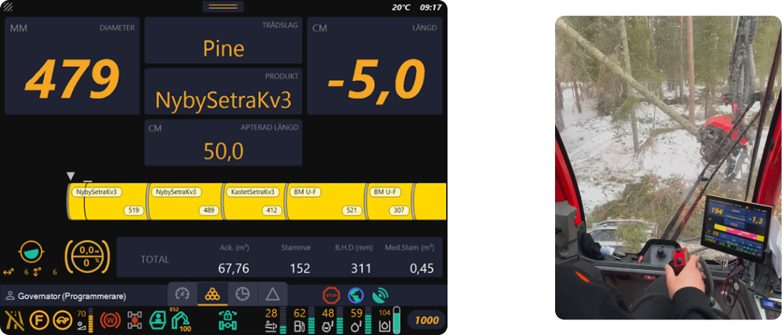

Master Thesis
Client
Komatsu Forest
Role
UX/UI Design
Tools
Figma, Miro
BACKGROUND
When working on tasks that require a lot of focus and concentration, such as operating heavy forestry machinery like the harvester shown in the image, one must constantly be attentive to their surroundings. This is both for safety and quality reasons.
There is little room for distractions, such as looking at a screen, which can lead to accidents, frustration, and inefficiency.
There is a control and information system called MaxiXT to support the forestry machine operators. It displays a significant amount of information on a screen in the cabin.
Presenting the correct information at the right time ensures that the operators can work efficiently and safely.
So, what have I done? I have created a user-friendly interface for the control and information system MaxiXT, which is used in Komatsu Forest's forestry machines. In this work, I have focused on harvesters.
As mentioned, harvesters are the machines used in forestry to fell, de-limb, and cut trees into logs.
Operators receive the information they need on the screen to carry out their work. This includes length, product details, tree diameter, area maps, fuel level, and more.
This work has been done in collaboration with Komatsu Forest, one of the world's largest forestry machinery manufacturers. They have their headquarters and factory in Umeå.
UNDERSTANDING THE USERS
A literature review was conducted to gain more knowledge in fields including forestry and usability. One study revealed that forestry machine operators pay very little attention to the screen while driving, a finding confirmed by observations. Another study demonstrated that the readability during rapid skimming deteriorates significantly with small text and compressed lettering. Next, an analysis of the current interface was performed, leading to the following conclusions:
INFORMATION OVERLOAD
The screen is crowded with information, resulting in a cluttered and difficult-to-scan appearance.
LACK OF VISUAL HIERARCHY AND UNALIGNED COMPONENTS
This makes the information hard to comprehend quickly.
CONFUSING COLORS
All components are either red, yellow, or green, causing everything to compete for the user's attention.
Subsequently, user research was conducted, involving the observation of 2 individuals, interviews with 6 individuals, and a survey with 30 respondents
DEFINING THE PROBLEM
The ideation phase was carried out through diagrams that categorize and group the information, a technique known as "Affinity diagram." Among the categories included are user needs and challenges, among others. Additionally, "Personas" were identified, which are fictional individuals representing the various user groups. This was done to maintain a user-centred focus throughout the entire process. Based on the user research and personas, user need statements and development tasks were defined. These statements mediate the specific needs and goals of the users, obtained from the insights gained during the research process. They serve as a base for guiding the design process and ensuring that the solutions address the user's needs. Different statements and tasks were defined based on the personas.
IDEATE
One technique that was used was "Scamper", which is a type of brainstorming method that aims to provide questions that allow you to find solutions to various problems. An example of a question where M stands for "Modify" is "Could the product be modified to improve results?".
When asked "Can the product be modified to improve results?" different answers were produced based on the previous phases.
An example is "to make it possible to see the map in the production view with the most prioritized production information"
An example of information could be tree species or fuel level.
Another method used was scenario mapping, where personas are used in different scenarios to gain an understanding of their needs and behavior.
PROTOTYPE & TEST
Once ideas have been generated, prototypes of the solutions are created. Prototypes involve creating sketches and models of what a final product could look like.
In the final stage of the design thinking process, the prototypes are tested with users to get feedback and insights on how well the solutions meet the users' needs. Based on the feedback from the user tests, the prototypes are refined and the design process can then be iterated as needed.
A Low-Fidelity prototype was sketched with paper and pencil and was the basis for the Mid-Fidelity prototype. If there had been more time, the Lo-Fi prototype would have been tested with users before the mid-fi prototype.
The Mid-Fi prototype was tested with users and the feedback included being able to change the size of the map and the information widgets.
Then the Hi-Fi prototype was tested with users and based on the results of those tests, an update was made with an explanatory text stating that it is possible to change the size of the map and widgets by clicking on them when in editing mode.
WHAT I LEARNED
Working on this project was a significant learning journey for me, and it greatly contributed to the development of a wide range of essential skills and competencies. One of the key areas where I acquired new skills was in the realm of user-centered design. I gained a deeper understanding of how to empathize with users, conduct effective user research, and translate those insights into design decisions that prioritize usability and user satisfaction.
Furthermore, project management played a crucial role in this endeavour. I learned how to efficiently plan and execute a project, breaking it down into manageable tasks, setting priorities, and ensuring timely delivery. This experience enhanced my proficiency in agile project management, allowing me to adapt to changing requirements and constraints effectively.
The project also underscored the importance of collaboration and teamwork. I honed my abilities to work harmoniously with my supervisors and the team at Komatsu Forest, fostering clear and open communication. This collaborative spirit enabled us to navigate challenges and pivot when necessary to meet project objectives successfully.
Incorporating user testing into the process was another pivotal aspect of this project. I gained practical experience in designing and conducting user tests, interpreting the results, and leveraging them to guide design refinements. This iterative approach not only improved the project's outcomes but also deepened my understanding of the iterative nature of user-centered design.
Overall, this project presented both challenges and rewards, ultimately equipping me with a robust skill set and competencies that I believe will be invaluable in my future endeavours. It reinforced the significance of user-centricity, effective project management, collaboration, and adaptability in creating successful and impactful designs.